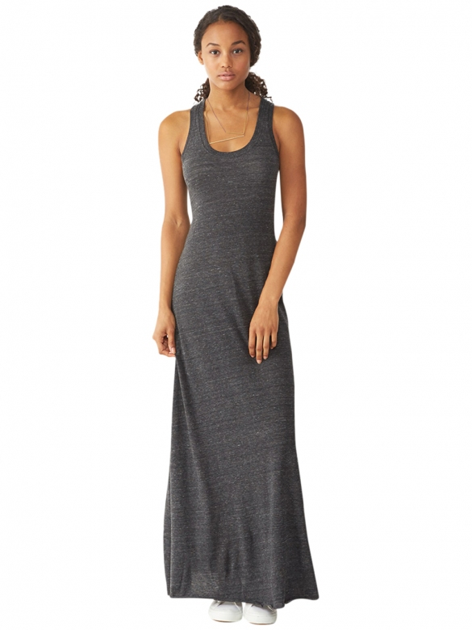
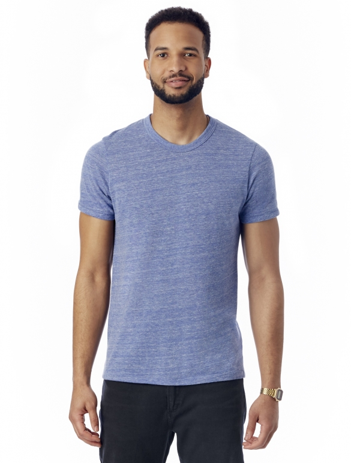
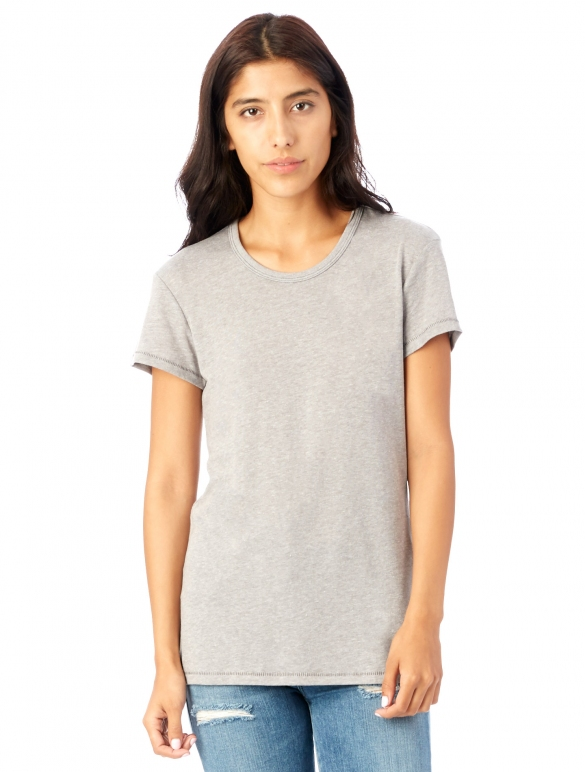

Back
What can I get here?
Men's Clothing.
Women's Clothing.
Alternative Apparel
vs
Industry
Makes over 80% of their clothing using sustainable materials and practices
Uses non-toxic and low-impact dyes in all of their clothing
All of the factories they employ are in accordance with the
Fair Labor Association Workplace Code of Conduct
. Some are additionally certified by
Worldwide Responsible Accredited Production
Is a certified Green Business in Los Angeles
An estimated 20 to 60 percent of garment production is done by
informal workers
(or subcontractors hired to fill a certain quota)
In competition for lower prices, countries with the lowest production cost prevail at the expense of
other countries' industries
The clothing industry is the second biggest polluter of clean water
  
Fast Fashion
Home
Problem
Brands